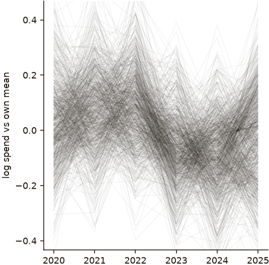

The book is no steadier than one program of the same size.
Usual measures say about 3× steadier. Allowing for how volatility grows with size gives 0.99 (Corning mock) and 1.15 (MS mock).
Front door A+B · Hybrid
First what is blocked on you, then the top three undecided methods, then the newest findings as picture cards.
Approved 11-13, direction still open. JPM–GS ρ −0.698, −0.882 after removing the market.
✎ Needs directionOld Q1Recommend›Your call: Approved 11-13; the direction for this work is still yours to set.
Top pick: Math · scouted 2026-11-12
Respond #53 Open 2026-11-12 edition →
👍 go · 👎 drop · 👀 park · or comment refine: …
Python port at 1,260/1,280 parity. Accept the 20 R quirks, or pre-register the power curve (P2)?
▶ BuildingOld Q1Recommend›Your call: Accept the 20 R quirks and pause, or pre-register P2.
Top pick: Math · scouted 2026-11-12
Respond #50 Open 2026-11-12 edition →
👍 go · 👎 drop · 👀 park · or comment refine: …
Stress-test pre-tax income orders payouts; drawdown adds nothing beyond it.
○ NewQ3Recommend›Top pick: New use · scouted 2026-11-16
Respond #63 Open method page →
👍 go · 👎 drop · 👀 park · or comment refine: …
Repo mix alone recovers calendar order; a “mix clock” dates new months with 1.06-yr error vs 1.92.
○ NewQ1Recommend›Top pick: Math · scouted 2026-11-15
Respond #60 Open 2026-11-15 edition →
👍 go · 👎 drop · 👀 park · or comment refine: …
Stress pre-tax income gives 15% skill on next payouts; the SCB itself has none.
○ NewQ3Recommend›Top pick: Math · scouted 2026-11-14
Respond #58 Open 2026-11-14 edition →
👍 go · 👎 drop · 👀 park · or comment refine: …
Usual measures say about 3× steadier. Allowing for how volatility grows with size gives 0.99 (Corning mock) and 1.15 (MS mock).
A bank one IQR better on severely adverse pre-tax income has the higher payout 68% of the time (Holm p = 0.02).
Calls of “this program really changed”: 91 vs 14 (Corning mock) and 200 vs 28 (MS mock). Wrong sign: 0% and 1.5%.


1,052 Corning-mock programs, each indexed to its own mean. Same data, two drawings.